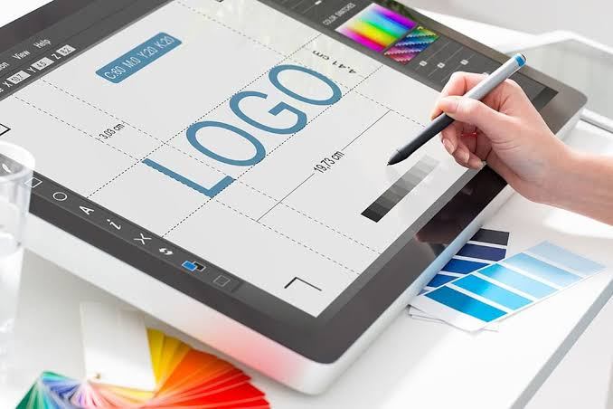
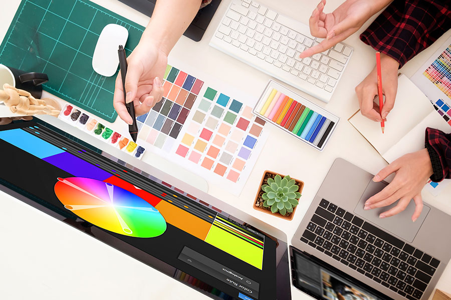
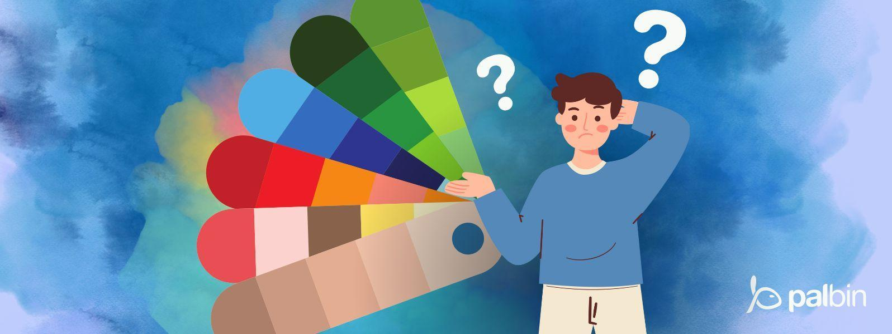
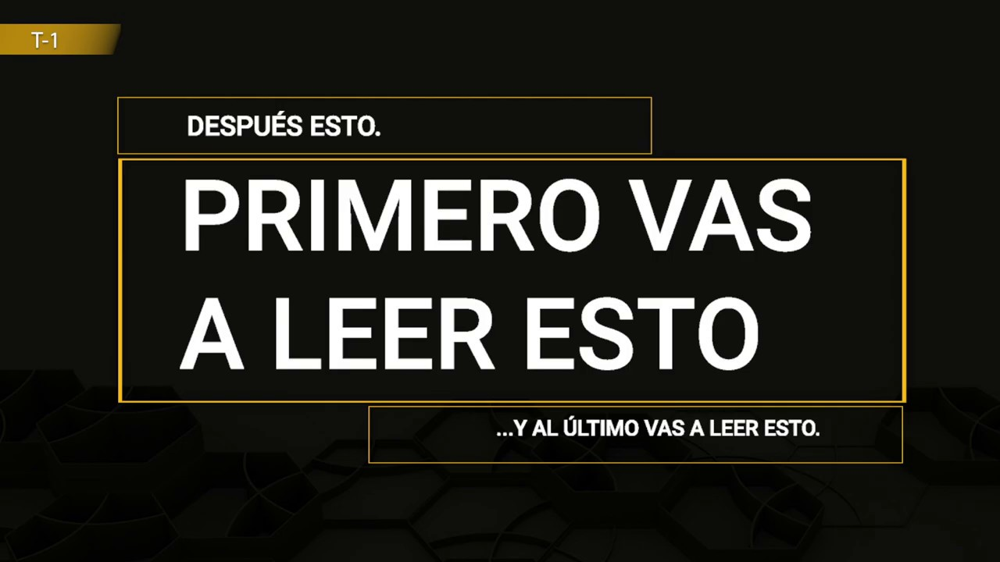

Bienvendi@
El diseño visual es una disciplina del diseño digital que se encarga de la construcción de experiencias visuales a través del uso estratégico de elementos como el color, la tipografía, la composición, el contraste y la jerarquía visual. Su objetivo principal es comunicar información de manera clara, estética y funcional.
En la actualidad, el diseño visual es fundamental en sitios web, aplicaciones móviles, interfaces digitales y redes sociales, ya que influye directamente en la experiencia del usuario y en la forma en que se percibe la información.
¿Cuáles son los pilares del Diseño Visual?
Todo proyecto visual exitoso se apoya en elementos y principios que permiten comunicar mensajes de manera efectiva. Estos pilares constituyen la base sobre la que se construyen sitios web, aplicaciones, campañas publicitarias, marcas e interfaces digitales modernas.
Elementos Básicos

El diseño visual se construye a partir de siete pilares fundamentales: línea, forma, espacio, textura, valor y color. Estos elementos son la materia prima de toda composición visual y permiten transmitir ideas de manera clara, atractiva y funcional.
Principios de Composición

Los elementos visuales se organizan conscientemente mediante principios como la alineación, el contraste, la jerarquía, la repetición y la proximidad. Estas reglas ayudan a crear diseños equilibrados, ordenados y fáciles de comprender para el usuario.
Objetivo del Diseño Visual

Su principal objetivo es captar la atención del espectador, guiar su lectura visual y provocar una respuesta específica. Un buen diseño no solo comunica información, sino que también genera emociones, mejora la experiencia del usuario y fortalece el mensaje que se desea transmitir.
¿Qué es el Diseño Visual?
El diseño visual es el área encargada de la representación gráfica de la información en medios digitales. No solo busca estética, sino también organización, claridad y comunicación efectiva.
El diseño visual es una disciplina que combina arte, tecnología y comunicación para transmitir mensajes de forma clara, atractiva y efectiva. Utiliza elementos como la tipografía, el color, las imágenes y la composición para resolver problemas de comunicación visual.
Su función principal es estructurar los elementos visuales para guiar la atención del usuario y mejorar la comprensión del contenido dentro de interfaces digitales.
Otras fuentes que puedes consultar
Los 5 contenidos visuales más populares en diseño gráficoPrincipios del Diseño Visual
Los principios del diseño visual son reglas fundamentales que permiten crear composiciones equilibradas, funcionales y visualmente coherentes.
Los principios del diseño visual son las reglas fundamentales que guían la organización de elementos (líneas, formas, colores y texturas) para crear composiciones equilibradas, atractivas y funcionales. Dominar estos conceptos asegura que el mensaje se comunique con eficacia, mejorando notablemente la legibilidad y la experiencia del usuario.
Equilibrio
Distribución visual del peso en una composición.
Contraste
Diferencias visuales que permiten destacar elementos importantes.
Jerarquía
Organiza la información según su nivel de importancia visual.
Alineación
Ordena elementos en ejes comunes para generar estructura.
Repetición
Mantiene consistencia visual mediante patrones repetidos.
Proximidad
Agrupa elementos relacionados para mejorar comprensión.
Espacio en blanco
Área vacía que mejora la lectura y evita saturación visual.
Énfasis
Punto focal que dirige la atención del usuario.
Teoría del Color
La teoría del color es un conjunto de reglas y principios fundamentales que explican cómo interactúan, se combinan y se perciben los colores. Es la base indispensable en disciplinas como el arte, el diseño gráfico, la pintura y la producción audiovisual para crear armonía, contraste y transmitir emociones. Gracias a estos conocimientos, los diseñadores pueden construir composiciones visuales atractivas, mejorar la comunicación de mensajes y generar experiencias más efectivas para los usuarios.

Círculo Cromático
Base para crear paletas. Colores análogos y complementarios.
Regla 60-30-10
60% dominante, 30% secundario, 10% acento.
RGB
Colores en pantalla representados en hexadecimales.
Psicología del Color
Rojo energía, azul confianza, verde naturaleza, amarillo atención.
Otras fuentes que puedes consultar
Tipografía
La tipografía web es el diseño, estilo y disposición de los textos en un sitio de internet. No solo abarca la fuente elegida, sino también su tamaño, color, interlineado y jerarquía visual. Su objetivo principal es garantizar una lectura cómoda y transmitir la personalidad de la marca.
Aspectos Fundamentales de la Tipografía
Familias tipográficas: Son los diseños principales de las fuentes, como las Serif (con remates), Sans-serif (sin remates) o Decorativas. Cada familia transmite diferentes sensaciones y estilos visuales.
Jerarquía: Consiste en utilizar distintos tamaños, pesos y estilos tipográficos para diferenciar títulos, subtítulos y texto principal, facilitando la organización de la información.
Legibilidad y espaciado: La separación entre líneas, palabras y letras debe estar optimizada para que el contenido sea fácil de leer en cualquier dispositivo y tamaño de pantalla.
DaFont
Catálogo enorme de fuentes creativas organizadas por estilos.
Google Fonts
Fuentes gratuitas, seguras y optimizadas para web.
FontSpace
Fuentes gratuitas con opción de uso comercial.
1001 Free Fonts
Más de 150,000 tipografías organizadas por categorías.
Herramientas
Adobe Color y Figma ayudan a crear sistemas visuales profesionales.
Jerarquía Visual

La jerarquía visual es un principio fundamental del diseño que consiste en organizar y priorizar los elementos de una composición para guiar la mirada del espectador. Establece un orden de lectura claro, permitiendo que el público identifique primero el mensaje principal antes de notar los detalles secundarios.
Tamaño y escala
Lo más grande se percibe primero.
Contraste
Permite destacar elementos importantes.
Tipografía
Pesos y estilos ayudan a organizar información.
Posición
La ubicación influye en la lectura visual.
Espacio en blanco
Mejora la claridad y reduce saturación.
Proximidad
Elementos relacionados se agrupan visualmente.
Jerarquía Visual
Tamaño y escala
Lo más grande se percibe primero.
Contraste
Permite destacar elementos importantes.
Tipografía
Pesos y estilos ayudan a organizar información.
Posición
La ubicación influye en la lectura visual.
Espacio en blanco
Mejora la claridad y reduce saturación.
Proximidad
Elementos relacionados se agrupan visualmente.
Diseño Responsive

El diseño web responsivo (Responsive Web Design o RWD) es una técnica de desarrollo que permite que una página web adapte automáticamente su diseño y contenido a cualquier dispositivo, ya sea una computadora, tableta o teléfono móvil. Gracias al uso de estructuras flexibles, imágenes adaptables y reglas CSS, se mejora la experiencia del usuario sin necesidad de crear diferentes versiones del mismo sitio.
Estructura fluida
Los elementos se ajustan automáticamente al tamaño de la pantalla.
Media Queries
Permiten aplicar diferentes estilos CSS según el dispositivo.
Imágenes flexibles
Las imágenes cambian de tamaño sin deformarse ni afectar el diseño.
Experiencia táctil
Optimiza la navegación para celulares y tabletas mediante botones y elementos fáciles de tocar.